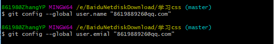

首先根据自己电脑的版本下载git安装
1:git init
项目文件夹下右键git init 初始化

2:git config
配置上传项目的用户名和密码
git config --global user.name "861988926@qq.com"
git config --global user.email "861988926@qq.com"

3:git add . git commit -m ""
上传文件
1：首先将文件提交到本地仓库。git add . 这个命令是上传所有的本地修改文件到本地仓库
2：然后提交我们的说明内容。 git commit -m "说明内容" 填写提交内容
直接git commit命令会进入vi编辑器模式。点击英文i会进入编辑模式。可以在vi编辑器下编写文字，编写完毕之后按esc键推出编辑模式。然后输入英文：冒号。输入q 也就是quit退出编辑模式
4:git status git log
1：git status 可以查看提交状态*（此操作不必要）
2: git log可以查看提交日志记录
3: git log可以查看提交日志记录和版本号
3: git reflog可以查看全部提交日志记录和版本切换日志
5:git reset --hard Head~0或者 git reset --hard Head~1
1：git reset --hard Head~0和git reset --hard Head~1 回到上一次版本状态或者上上次版本状态
2：git reset --hard +版本号回到指定版本

6:添加分支 切换分支 合并分支
1：git branch dev 就是创建一个dev分支,刚创建时dev分支的内容和master分支是一样的
2：git branch就是查看所有分支， 绿色样式的分支代表我们所处的分支
3：git checkout dev 就是切换对应分支
4：在dev分支修改内容。，提交到本地仓库
5：在dev分支修改内容。合并到master分支 ,git merge 加分支名字，就是把当前分支与后面指定的分支合并
7:git branch -d 加分支名字
1：删除分支。当前分支下不能删除当前分支
2：推送本地内容到远程仓库 git push origin master 将本地文件推送到远程分支master
8:git merge
1：在拉去我们远程仓库（防止和本地有冲突） git pull origin master 从远程分支上拉去项目 （此处分支为master）
2：推送本地内容到远程仓库 git push origin master 将本地文件推送到远程分支master
9:第一次提交到远程仓库需要指向一下远程仓库，git remote add origin + 远程仓库地址
1：git remote add origin + 远程仓库。是给当前本地仓库添加一个远程仓库对应地址
2：git push -u origin master。git push 是将本地仓库内容提交到远程仓库。 origin master 是指提交到matser分支。
3：建议大家在提交master分支之前先使用 git pull origin master 拉去一下远程分支。防止有冲突
10：使用ssh方式管理代码。
1：使用命令在桌面给这个电脑生成一个自己的公钥和私钥`ssh-keygen -t rsa -C "861988926@qq.com"`
2：在我们的github配置上加上私钥，以后这个私钥的电脑就能上传代码了。
3：公司级别的代码一般权限有专员控制，所以我们只要会提交，拉去代码 查看日志，提交记录和合并冲突就行了
3：添加ssh
4：推送代码
git add .
git commit -m '注释'
git push ssh地址
1:git init